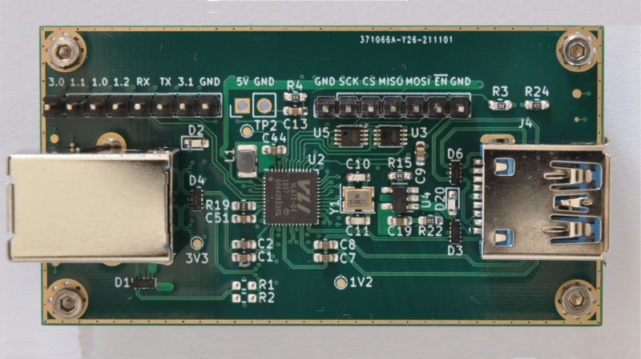

Random hírek minden napra.
A CHIP TO BRIDGE THE USB 2 - USB 3 DIVIDE
| Izé | Valami | |
|---|---|---|
| Ez szívás | Kenyér | Pohár |
| Ez még nagyobb | Kiskancsó | Nagykancsó |
On Twitter, [whitequark] has found and highlighted an intriguing design - a breakout board for the VL670, accompanied by an extensive yet very easy to digest write-up about its usefulness and inner workings. The VL670 is a chip that addresses a surprising problem - converting USB 2.0 signals into USB 3.0.
If you have a USB 2.0 device and a host with only USB 3.0 signals available, this chip is for you. It might be puzzling - why is this even needed? It's about the little-known dark secret of USB3, that anyone can deduce if they ever have to deal with a 9-pin USB 3.0 connector where one of the three differential pairs doesn't quite make contact.
HA-DX rádióamatőr verseny 2022
A Magyar Rádióamatőr Szövetség idén is megrendezte a HA-DX versenyt, melyet minden év január harmadik teljes hétvégéjén tartanak 24 órás időintervallumban. Az idei évben 15-e szombat 12:00 UTC és 16-a vasárnap 11:59 UTC között volt kihirdetve. A versennyel az egész világ rádióamatőreit invitálják QSO-kra, melynek során egyik fontos cél a hazai rádióamatőrök tevékenységének népszerűsítése.
ÚJABB FORRADALMI MEGMOZDULÁS PARAGUAYBAN
A zsoldjukat követelő paraguayi légierők egy ejtőernyős zászlóaljat dobtak le az elnöki palota kertjébe. Sikerült is rövid lövöldözés után elkergetni Aurelio Lapaz amerikabarát, jobboldali beállítottságú elnököt, aki alig háromnegyed órát töltött hivatalában. Az új elnök a haladó gondolkozású Lopez Burillo, akinek győzelmét Asuncion lakossága fáklyás menettel ünnepli, mely lapunk zártakor még tart.